%%{init: {'theme': 'base', 'themeVariables': { 'fontSize': '46px', 'fontFamily': 'Roboto'}}}%%
graph LR
A["📊 Dados<br/>(muitas variáveis)"] -->|"PCA"| B["🔮 Componentes Principais<br/>(poucas dimensões)"]
B --> C["📈 Visualização <br/>e Análise"]
style A fill:#44475a,color:#f8f8f2
style B fill:#bd93f9,color:#282a36
style C fill:#50fa7b,color:#282a36

Parte 1: Fundamentos Estatísticos
De variância a covariância — os blocos do PCA
%%{init: {'theme': 'base', 'themeVariables': { 'fontSize': '56px', 'fontFamily': 'Roboto'},
'flowchart': {
'rankSpacing': 170
}}}%%
graph LR
V["Variância"] --> C["Covariância"]
C --> CM["Matriz de<br/>Covariância"]
CM --> E["Autovetores <br/>Autovalores"]
E --> PCA["PCA"]
style V fill:#8be9fd,color:#282a36
style C fill:#50fa7b,color:#282a36
style CM fill:#ff79c6,color:#282a36
style E fill:#f1fa8c,color:#282a36
style PCA fill:#bd93f9,color:#282a36
Variância: dispersão dos dados
Variância mede o quanto os dados se espalham em torno da média:
Var(X) = \( \frac{1}{n-1} \sum_{i=1}^{n} (x_i - \bar{x})^2 \)
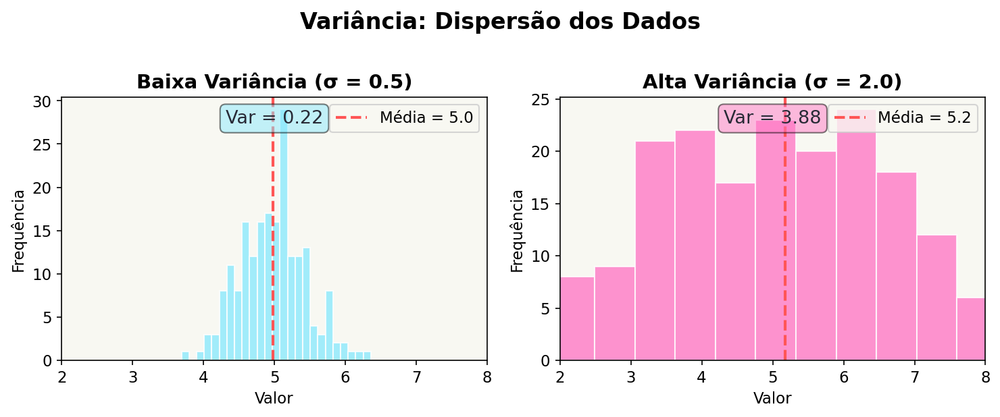
Covariância: duas variáveis juntas
Covariância mede como duas variáveis variam juntas:
Cov(X, Y) = \( \frac{1}{n-1} \sum_{i=1}^{n} (x_i - \bar{x})(y_i - \bar{y}) \)
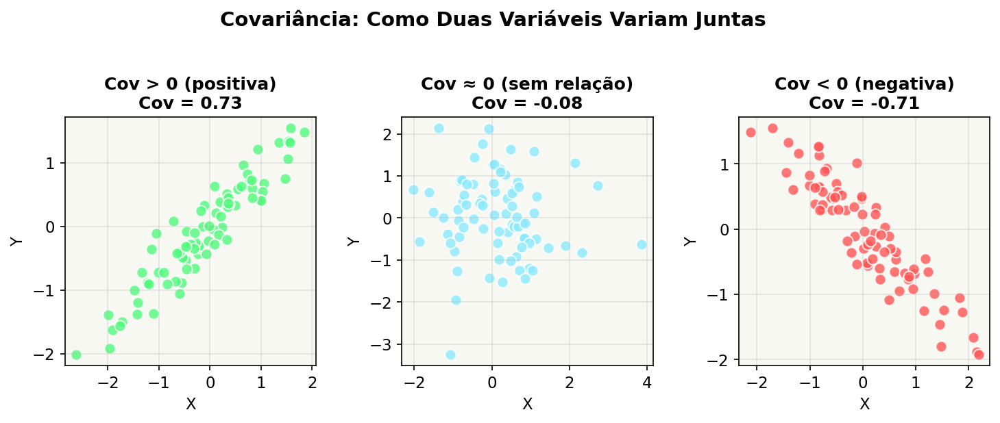
Matriz de Covariância
Para n variáveis, organizamos todas as covariâncias numa matriz:
Cov = | Var(X₁) Cov(X₁,X₂) ... |
| Cov(X₂,X₁) Var(X₂) ... |
| ... ... ... |
- Diagonal: variâncias de cada variável
- Fora da diagonal: covariâncias entre pares
- Simétrica: Cov(X,Y) = Cov(Y,X)
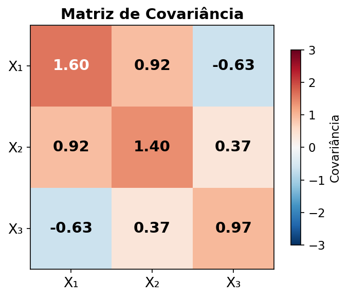
Calculando a Matriz de Covariância
- Centralizar: \( X_c = X - \bar{X} \)
- Produto: \( X_c^T \cdot X_c \)
- Normalizar: \( \text{Cov} = \frac{X_c^T X_c}{n-1} \)
NumPy: np.cov(X.T) ou
(Xc.T @ Xc) / (n-1)

Exemplo: Matriz de Covariância 2×2
Parte 2: Vetores e Transformações
Como matrizes transformam vetores — o caminho para autovetores
Transformação Linear: M · v
Multiplicar um vetor v por uma matriz M pode rotacionar e escalar o vetor:
\( M \cdot \vec{v} = \vec{v}' \)
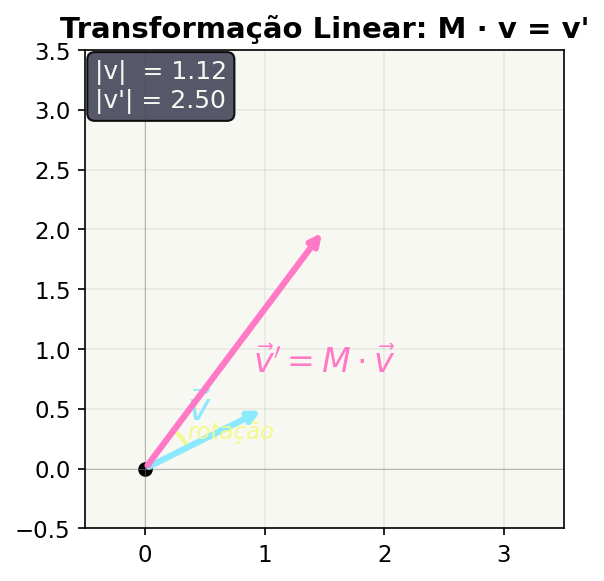
Autovetores: direções que NÃO rotacionam
\( A \cdot \vec{v} = \lambda \cdot \vec{v} \)
O vetor v só é escalado por λ — não muda de direção!
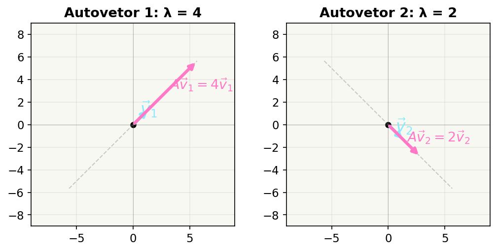
Autovalores: quanto escalar
- \(\lambda\) = fator de escala
- Se \( \lambda > 1 \): vetor cresce
- Se \( 0 < \lambda < 1 \): vetor encolhe
- No PCA: maior λ = mais variância naquela direção
PC1 = autovetor com maior autovalor
\( A \cdot \vec{v_1} = \lambda_1 \cdot \vec{v_1} \)
\( A \cdot \vec{v_2} = \lambda_2 \cdot \vec{v_2} \)
\( \lambda_1 > \lambda_2 \Rightarrow \) PC1 = \( \vec{v_1} \)
Por que \( V^{-1} = V^T \) ?
- Autovetores são unitários: \( \|\vec{v_i}\| = 1 \)
- Autovetores são ortogonais: \( \vec{v_i} \cdot \vec{v_j} = 0 \)
- Matriz com colunas ortonormais → ortogonal
- Matriz ortogonal → \( V^{-1} = V^T \)
Consequência: para reconstruir, basta \( X = PC \cdot V^T \)
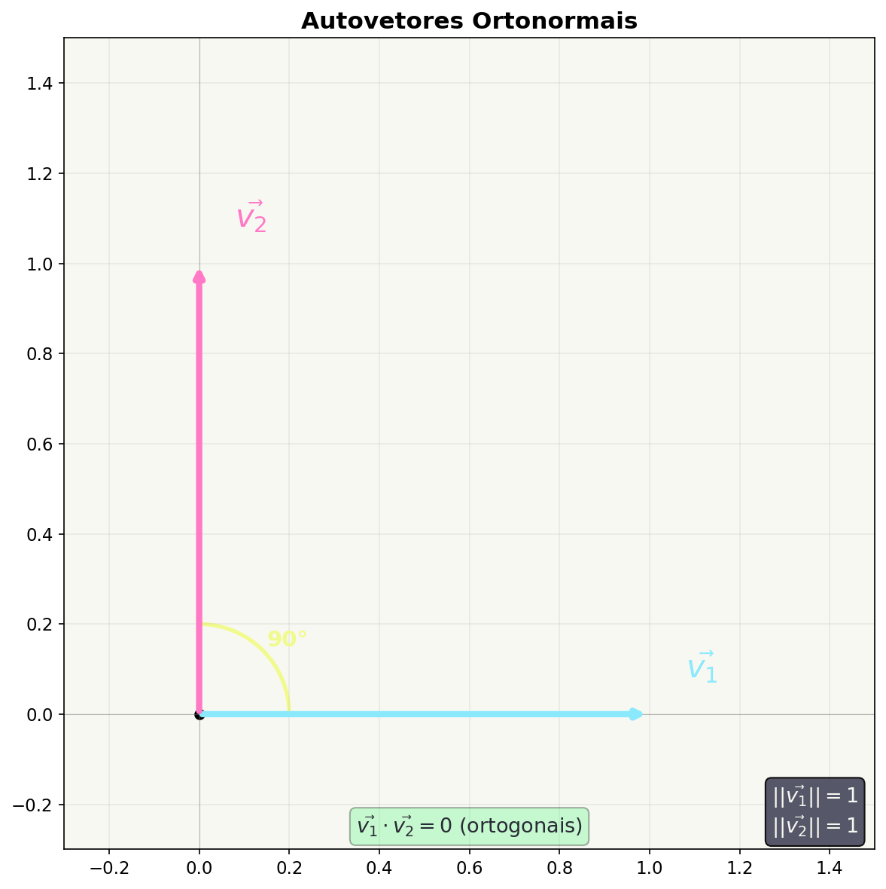
Parte 3: O Algoritmo PCA
Workflow completo — do dado bruto aos componentes principais
Workflow do PCA em 4 Passos
%%{init: {'theme': 'base', 'themeVariables': { 'fontSize': '26px', 'fontFamily': 'Roboto'}}}%%
graph LR
A["1\. Dados<br/>X"] --> B["2\. Centralizar<br/>Xc"]
B -->C["3\. Covariância<br/>Cov"]
C --> D["4\. Autovetores V<br/>Autovalores λ"]
D -->E["Componentes<br/>Principais"]
style A fill:#8be9fd,color:#282a36
style B fill:#50fa7b,color:#282a36
style C fill:#ff79c6,color:#282a36
style D fill:#f1fa8c,color:#282a36
style E fill:#bd93f9,color:#282a36
4 Passos — Visualmente
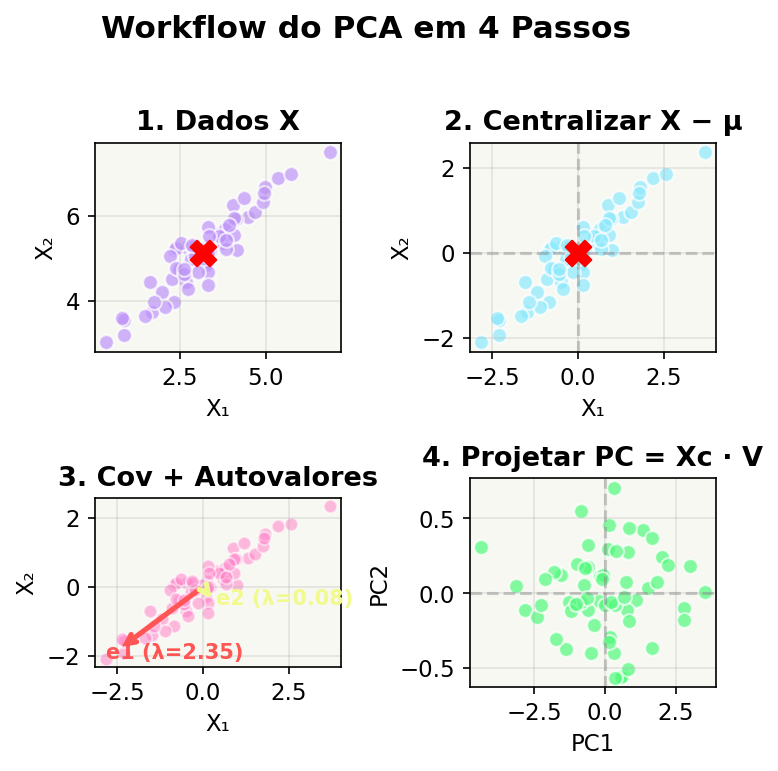
PCA em NumPy — Passo a Passo
Transformação: Dados → Componentes
\( PC = (X - \mu) \cdot V \)
Onde V é a matriz de autovetores (colunas ordenadas pelo maior λ)
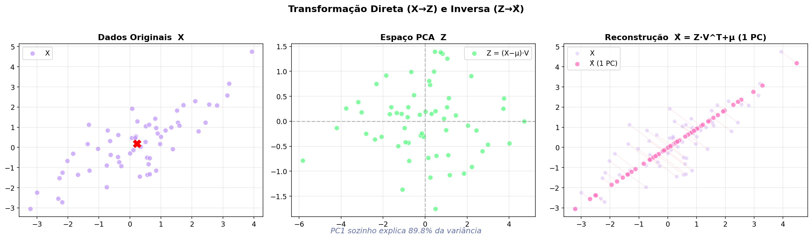
Reconstrução: Componentes → Dados
\( \hat{X} = PC \cdot V^T \)
- \(\|\vec{v_i}\| = 1 \) → autovetores unitários
- Colunas ortonormais → \( V^{-1} = V^T \)
- Logo: \( X_c = PC \cdot V^T = PC \cdot V^{-1} \)
- E reconstruído: \( \hat{X} = PC \cdot V^T + \mu \)
Usando apenas k componentes: reconstrução aproximada!
Resumo:
Ida: \( PC = (X - \mu) \cdot V \)
Volta: \( \hat{X} = PC \cdot V^T + \mu \)
V⁻¹ = VT pois ‖v‖ = 1 e vᵢ ⊥ vⱼ
Variância Explicada por Componente
A proporção de variância explicada por cada PC:
\( \text{proporção}_k = \frac{\lambda_k}{\sum \lambda_i} \)
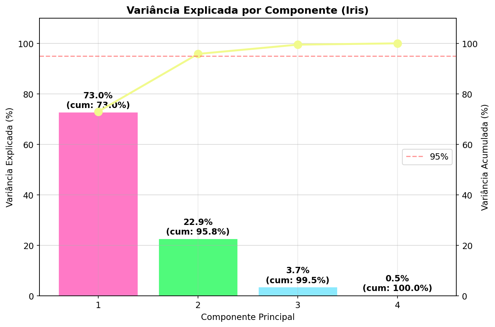
Exemplo: Variância Explicada (Iris)
PC1 + PC2 explicam 97.77% da variância — podemos usar apenas 2 componentes!
Parte 4: PCA na Prática
Aplicando com scikit-learn no dataset Iris
PCA com scikit-learn
Iris: Visualização em 2D com PCA
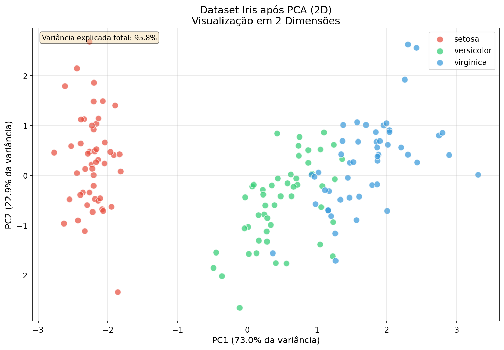
De 4 variáveis para 2 componentes — e ainda dá para separar as espécies!
Quantos componentes usar? Método do Cotovelo
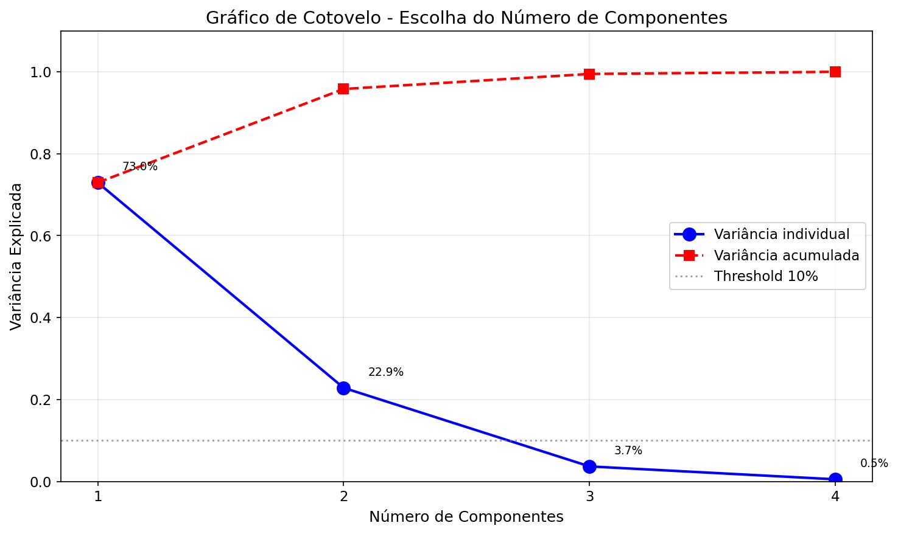
Exemplo Numérico Completo 2×2
λ₂ = 0 → PC2 não adiciona informação. Os dados vivem numa reta!
Quiz Interativo
Teste seus conhecimentos sobre PCA!
Resumo da Aula
graph LR
A["Variância"] --> B["Covariância"]
B --> C["Matriz de<br/>Covariância"]
C --> D["Autovetores <br/>Autovalores"]
D --> E["PCA"]
E --> F["PC = (X-μ)·V"]
F --> G["X̂ = PC·Vᵀ + μ"]
style A fill:#8be9fd,color:#282a36
style B fill:#50fa7b,color:#282a36
style C fill:#ff79c6,color:#282a36
style D fill:#f1fa8c,color:#282a36
style E fill:#bd93f9,color:#282a36
style F fill:#ffb86c,color:#282a36
style G fill:#8be9fd,color:#282a36